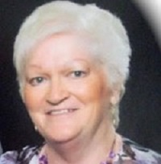

Volunteers
Juan David Carvajal - Volunteer from 2020, focused on plant bioinformatics, but he is specially working on Orquideas para la paz project which is a project related to the description of orchids from Antioquia and Caqueta with the help of thje community in post conflict times.
Luke Rominiecki - Cataloging Lepanthes at Selby Gardens

Rissa Flanders - GIS work locating and categorizing populations of endangered and threatened epiphytic orchids in Florida. Using multiple herbariums records, a map can be built showing the history and phenology of orchids in Florida, which can be evaluated in comparison to more current epiphytic orchid populations. This allows us to study population dynamics in relation to orchid phenology and can help with orchid conservation in the future.
Aaron S. Fink, MD - Mary Jo’s private collection of Dracula orchids at Selby Gardens
Nancy Karam - PhotoShop project at Selby Gardens
Nasly Poveda - Lab Technician de la Universidad de La Amazonia. Reconocimiento taxonómico hasta especie mediante barcoding y siembra in-vitro de orquídeas con técnicas microbiológicas.